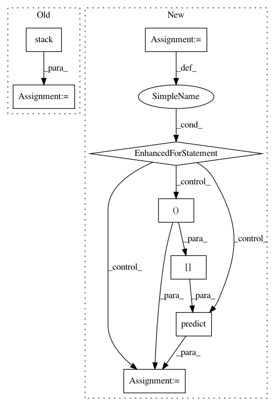

562508c5edf9988078f3ca4300e1d6be569a4b8f,python/timeseries/timeseries_customRNN.py,TsRNNCustom,train,#TsRNNCustom#Any#Any#,115
Before Change
def train(self, ts, n_predict=0):
n_data = ts.series_len
preds = None
x_train = np.stack(ts.tseries[0:self.n_lag], axis=1)
y_train = ts.tseries[self.n_lag]
z_train = np.zeros(shape=(x_train.shape[0], self.state_size))
zero_state = np.zeros(shape=(self.batch_size, self.state_size))
with tf.Session() as sess:
After Change
n_data = ts.series_len
preds = None
x_train = y_train = None
for x_train, y_train in ts.get_batches(self.n_lag, self.batch_size, single_output_only=True):
pass
z_train = np.zeros(shape=(x_train.shape[0], self.state_size))
zero_state = np.zeros(shape=(self.batch_size, self.state_size))
with tf.Session() as sess:
sess.run(tf.global_variables_initializer())
for epoch in range(self.n_epochs):
for i, batch in enumerate(ts.get_batches(self.n_lag, self.batch_size, single_output_only=True)):
x, y = batch
sess.run([self.training_op],
feed_dict={self.X: x, self.Y: y,
self.init_state: zero_state[0:x.shape[0], :]})
mse = self.err_loss.eval(feed_dict={self.X: x_train, self.Y: y_train,
self.init_state: z_train})
logger.debug("epoch: %d, mse: %f" % (epoch, mse))
if n_predict > 0:
preds = self.predict(ts.samples[-self.n_lag:, :], n=n_predict)
return preds
def predict(self, start_ts, n=1):
In pattern: SUPERPATTERN
Frequency: 3
Non-data size: 8
Instances
Project Name: shubhomoydas/ad_examples
Commit Name: 562508c5edf9988078f3ca4300e1d6be569a4b8f
Time: 2018-04-01
Author: smd.shubhomoydas@gmail.com
File Name: python/timeseries/timeseries_customRNN.py
Class Name: TsRNNCustom
Method Name: train
Project Name: IBM/adversarial-robustness-toolbox
Commit Name: 9bc56cc177b7997d6b4a30d204a08ef95a03a343
Time: 2018-05-09
Author: Maria-Irina.Nicolae@ibm.com
File Name: art/attacks/virtual_adversarial.py
Class Name: VirtualAdversarialMethod
Method Name: generate
Project Name: IBM/adversarial-robustness-toolbox
Commit Name: 557622faca0328c0303b824006c5fe11cc87cca1
Time: 2018-05-09
Author: mathsinn@ie.ibm.com
File Name: art/attacks/virtual_adversarial.py
Class Name: VirtualAdversarialMethod
Method Name: generate